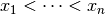
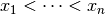
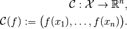

Discretizations¶
Mathematical background¶
In mathematics, the term discretization stands for the transition from abstract, continuous,
often infinite-dimensional objects to concrete, discrete, finite-dimensional counterparts. We define
discretizations as tuples encompassing all necessary aspects involved in this transition. Let
 be an arbitrary set, be the set of
be an arbitrary set, be the set of  -tuples where
each component lies in
-tuples where
each component lies in  . We define two mappings
. We define two mappings
which we call sampling and interpolation, respectively. Then, the discretization of
with respect to and the above operators is defined as the
tuple
The following abstract diagram visualizes a discretization:

TODO: write up in more detail
Example¶
Let be the space of real-valued
continuous functions on the interval ![[0, 1]](../_images/math/02b99e25ae92d555c285768eb92a199abd3cf9e2.png) , and let 
be ordered sampling points in .
, and let 
be ordered sampling points in .
Restriction operator:
We define the grid collocation operator as

The abstract object in this case is the input function  , and
the operator evaluates this function at the given points, resulting in
a vector in .
, and
the operator evaluates this function at the given points, resulting in
a vector in .
This operator is implemented as PointCollocation.
Extension operator:
Let discrete values be given. Consider the linear interpolation of those values at a point :
where  is the index such that .
is the index such that .
Then we can define the linear interpolation operator as
where stands for the function .
Hence, this operator maps the finite array to the abstract interpolating function .
This interpolation scheme is implemented in the LinearInterpolation operator.